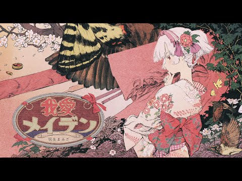

こんにちは、音の和の世界へ!!!!
ここは作成者が個人的におすすめする和風な現代音楽を紹介するサイトです。
アーティスト紹介
羽生まゐごさん🌸
様々なアーティストに楽曲提供もしており、独特な世界観をもつ日本のボカロＰでもあります。
2015年10月にデビューし、代表作に「懺悔参り」や「ハレハレヤ」があります。
ここでは、特に私がお勧めしたい曲「我愛メイデン」を紹介します！

この曲は、MVに登場する少女の歪んだ恋心や揺れ動く心情を巧みに描いており、
和風・ボカロ・中華的要素が絶妙に融合することで、聴く者を唯一無二の世界観へと引き込みます。
美しくもどこか不穏な音と映像が重なり、愛と執着が交差する物語が浮かび上がる作品です。
作った人のひとこと
こんにちは！和風な音楽やボカロが好きで、このサイトを作ってみました。
羽生まゐごさんの楽曲は、世界観がとても深くて引き込まれます。
特に「我愛メイデン」は、MVと曲の雰囲気がぴったりで何度も聴いています。
他にもおすすめの曲があったら、ぜひ教えてください！